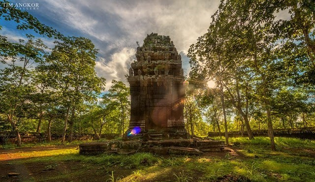

សូមស្វាគមន៍មកកាន់តំបន់ទេសចរណ៍កម្ពុជា
ប្រាសាទនាងខ្មៅ ជាប្រាសាទបុរាណខ្មែរដែលត្រូវបានសាងសង់ឡើងអំពីថ្មភក់ និងឥដ្ឋ តាមរចនាបទកោះកែ ក្នុងសម័យអង្គរសតវត្សទី១០ក្នុងរាជព្រះបាទជ័យវរ្ម័នទី៤នៃគ្រឹស្គសករាជ ដើម្បីឧទ្ទិសថ្វាយដល់ព្រះឥសូរក្នុងព្រហ្មមញ្ញសាសនា។ ប្រាសាទនេះមានទីតាំងស្ថិតនៅឃុំរវៀង ស្រុកសំរោង ខេត្តតាកែវ ក្បែរផ្លូវជាតិលេខ២ ចំងាយប្រមាណ៥២គីឡូម៉ែត្រពីភាគខាងត្បូងក្រុងភ្នំពេញ ២៧គីឡូម៉ែត្រពីទីរួមខេត្តតាកែវ និង៣គីឡូម៉ែត្រពីភ្នំជីសូរ។
បានជាហៅថាវត្ដប្រាសាទខាងខ្មៅ ព្រោះក្នុងវត្ដនោះមានប្រាសាទបុរាណពីរឈ្មោះប្រាសាទនាងខ្មៅ នៅខាងលិចវិហារ ចំក្លោងទ្វារវត្ដទិសបស្ចឹម។ ប្រាសាទទាំងពីរនោះធ្វើពីថ្មផង អិដ្ឋផង ទំហំ៤ម៉ែត្រ៤ជ្រុង កំពស់ ១០ម៉ែត្រ កំពូលស្រួចដូច ចេតិយខ្ពស់ត្រដែត។ ប្រាសាទនាងខ្មៅដែលស្ថិតនៅតំបន់កោះកេរិ៍្ដ ឬកោះកែនោះ ថ្វីបើជាប្រាសាទទោល (មានប្រាង្គតែមួយ) ក៏ប្រាសាទមានក្បាច់រចនានៅលើសសរពេជ្រមេទ្វារ និងផ្ដែរគួរឱ្យចាប់អារម្មណ៍។លោកប្រាក់ សុណ្ណារ៉ា អគ្គនាយករងនៃអគ្គនាយកដ្ឋានបេតិកភណ្ឌក្រសួងវប្បធម៌ និងវិចិត្រសិល្បៈបានបញ្ជាក់ថាទោះបីជាប្រាសាទនាងខ្មៅមានប្រាង្គតែមួយ ក្ដីក៏ប្រាសាទនេះមានកំពែងព័ទ្ធជុំវិញពីថ្មបាយក្រៀមខុសប្លែកពី ប្រាសាទនានានៅតំបន់កោះកេរិ៍្ដដែលភាគច្រើន ជាប្រាសាទពួកតាំងនៅក្បែរៗគ្នាមានមេប្រាសាទ និងបរិវារប្រាសាទចោមរោមដូចជា ប្រាសាទកោះកេរិ៍្ដ ជាដើម។ ប្រាសាទ នាងខ្មៅនេះ បើតាមឯកសារចារទុកបុព្វបុរសខ្មែរបានកសាងឡើងក្នុងរជ្ជកាលព្រះបាទ ជ័យវរ្ម័នទី៤ (គ.ស ៩២១-៩៤១) ដំណាលនឹងប្រាសាទកោះកេរិ៍្ដដែរ។ ប្រាសាទនេះ មានកំពែងថ្មបាយក្រៀមព័ទ្ធជុំវិញមានទំហំ៤៤ម.ខ៤៤ម ដោយមានខ្លោងទ្វារ២ នៅទិសខាងកើត និងទិសខាងលិច សម្រាប់ចេញចូល និងមានទ្វារបញ្ឆោតផង។ ដោយសារតែប្រាសាទនេះ សង់ពីថ្មបាយក្រៀម ពណ៌ខ្មៅ ប្លែកពីប្រាសាទដទៃទើបអ្នកស្រុកនាំគ្នាហៅថា “ប្រាសាទនាងខ្មៅ”តែម្ដងទៅ។ ប៉ុន្តែឈ្មោះដើមប្រហែលមិនហៅបែបនេះទេ ព្រោះនាមប្រាសាទជំនាន់នោះ ជាភាសាសំស្ក្រឹត។ ក្រៅពីក្បាច់ចម្លាក់រស់រវើកគួរឱ្យចាប់អារម្មណ៍ក៏នៅមានរូបសំណាក ឧមាយោនីតម្កល់តួសិវលិង្គនៅប៉ែកខាងក្នុងប្រាសាទ ប៉ុន្ដែតួលិង្គត្រូវជនទុច្ចរិតលួចដាប់យកបាត់ទៅហើយ។ ដោយសារតែមានតឹកតាងសិវលិង្គ និងទម្រឧមាយោនីបែបនេះហើយទើបអ្នកស្រាវជ្រាវអះអាងថា ប្រាសាទនាងខ្មៅ បុព្វបុរសខ្មែរកសាងឧទ្ទិសថ្វាយព្រះឥសូរដែលជាអាទិទេពធំជាងគេនៃ លទ្ធិព្រហ្មញ្ញសាសនា ដែលជះឥទ្ធិពលខ្លាំងទៅលើព្រះមហាក្សត្រនាហ្មឹនសព្វមុខមន្ដ្រី កវីបណ្ឌិត និងប្រជាពលរដ្ឋនាសម័យនោះ។លោកប្រាក់ សុណ្ណារ៉ា បន្ដទៀតថា ចំណែកប្រាសាទនាងខ្មៅ ដែលមានទីតាំងនៅឃុំរវៀង ស្រុកសំរោង ខេត្ដតាកែវ ត្រូវគេដឹងថា កសាងនៅ សតវត្សរ៍ទី១០ ប៉ុន្ដែរចនាបថធ្វើពីថ្មភក់ និងឥដ្ឋក្បូរក្បាច់រចនាក៏ប្លែកដែរ។ ប្រាសាទនាងខ្មៅនៅខេត្ដតាកែវមានប្រវត្ដិផ្សារភ្ជាប់ជាមួយរឿងព្រេង និទានចង់បង្ហាញពីចរិយាធម៌របស់ស្ដ្រី និងបកអាក្រាតពីទង្វើប្រាសចាកក្រម សីលធម៌របស់ព្រះនាងខ្មៅ ដែលជាបុត្រីស្ដេចសោយរាជ្យបានទៅស្រលាញ់បុរសម្នាក់ នៅក្បែរភ្នំជីសូរ រហូតដល់ព្រះបិតាទ្រង់ព្រះពិរោធបំបរបង់ចេញពីរាជធានីឱ្យទៅនៅក្នុង ប្រាសាទជាមួយស្វាមីជារាស្ដ្រ។ ប៉ុន្ដែប្រភពរឿងព្រេងទាក់ទងនឹងប្រាសាទនាង ខ្មៅ នៅខេត្ដតាកែវនេះ មិនអាចយកជាការពិតបានទេ ព្រោះការលើកឡើងពីប្រវត្ដិរបស់ប្រាសាទ សំខាន់នៅលើការស្រាវជ្រាវតាមរយៈសិលាចារឹក និងតាមលក្ខណៈវិទ្យាសាស្ដ្រទើបមានភាពប្រាកដ និយម។ ចំណែកប្រាសាទនាង ខ្មៅ នៅកោះកេរិ៍្ដគ្មានប្រភពរឿងព្រេងមកលាយឡំជាមួយទេ ប៉ុន្ដែ ករណីឈ្មោះប្រាសាទដូចគ្នាបែបនេះគឺអ្នកស្រុកហៅទៅតាមទ្រង់ទ្រាយពណ៌ សម្បុររបស់ប្រាសាទ។បច្ចុប្បន្នប្រាសាទនាង ខ្មៅ នៅតំបន់កោះកេរិ៍្ដទោះបីជាមានទីតាំងនៅឆ្ងាយពីទីប្រជុំជនក្ដីក៏ នៅតែមានអ្នកទេសចរជាតិនិងអន្ដរជាតិចូលទៅទស្សនាជាហូរហែហើយនៅពេលគេ ទៅមើលប្រាសាទនេះ ក៏នឹងបានទស្សនាប្រជុំប្រាសាទកោះកេរិ៍្ដដែលរួមមានរាប់រយប្រាសាទ ឯណោះ។ អ្នកទេសចរ ឱ្យតែបានមកដល់ប្រាសាទនាង ខ្មៅ កម្រដើរបង្ហួសណាស់ និង មានសំណូមពរដល់រាជរដ្ឋាភិបាល ពិសេសក្រសួងវប្បធម៌ និងវិចិត្រសិល្បៈមេត្ដាជួសជុលកែលម្អប្រាសាទនេះឡើងវិញចៀសវាងការ ទ្រុឌទ្រោមបាក់បែកកាន់តែធ្ងន់ធ្ងរ។

© រក្សាសិទ្ធិគ្រប់យ៉ាងដោយ Visit Cambodia tours ឆ្នាំ២០១៨
អាសយដ្ឋាន
អគារលេខ ៣០៨ មហាវិថីព្រះមុន្នីវង្ស
សង្កាត់បឹងរាំង ខណ្ឌដូនពេញ
Visit Cambodia tours ជាគេហទំព័រ សម្រាប់ធ្វើការស្វែងរកកន្លែងកម្សាន្ត និង បញ្ជាក់បន្ថែមនៅពត័មានរបស់ខេត្ត។
.jpg)